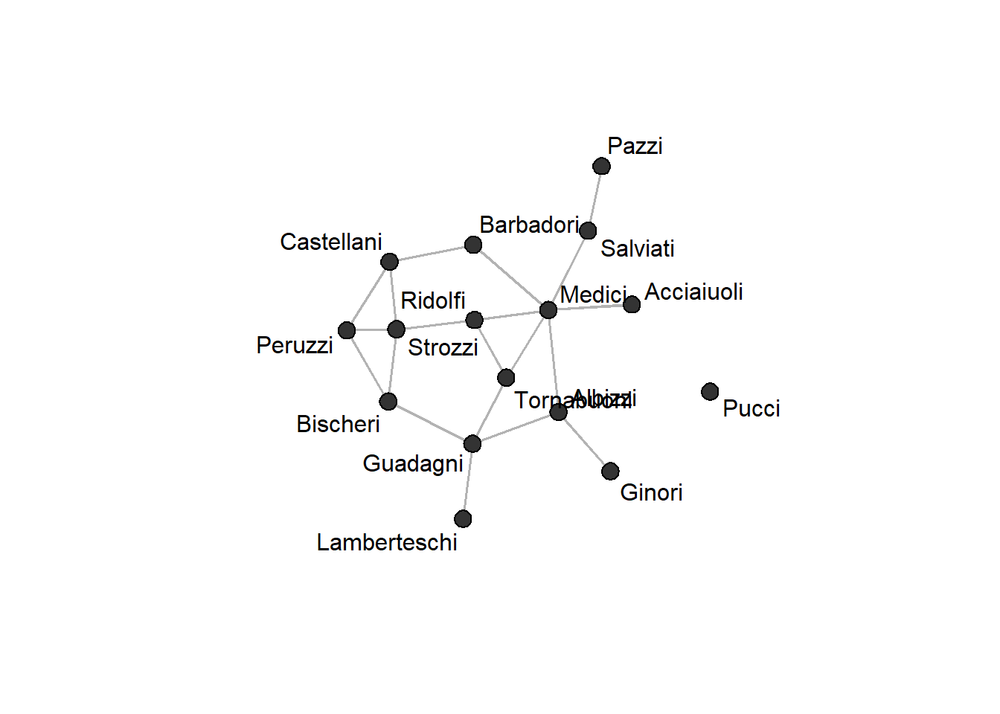
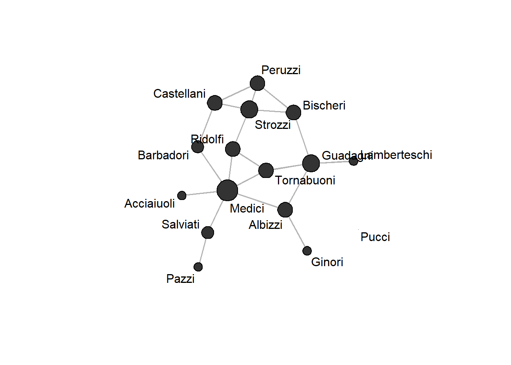
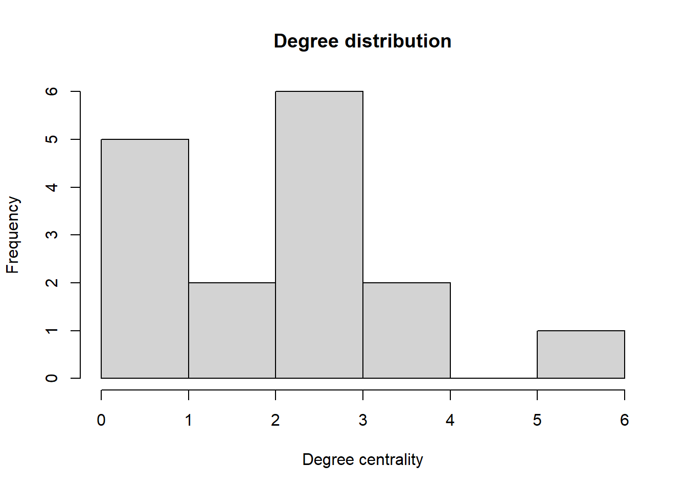
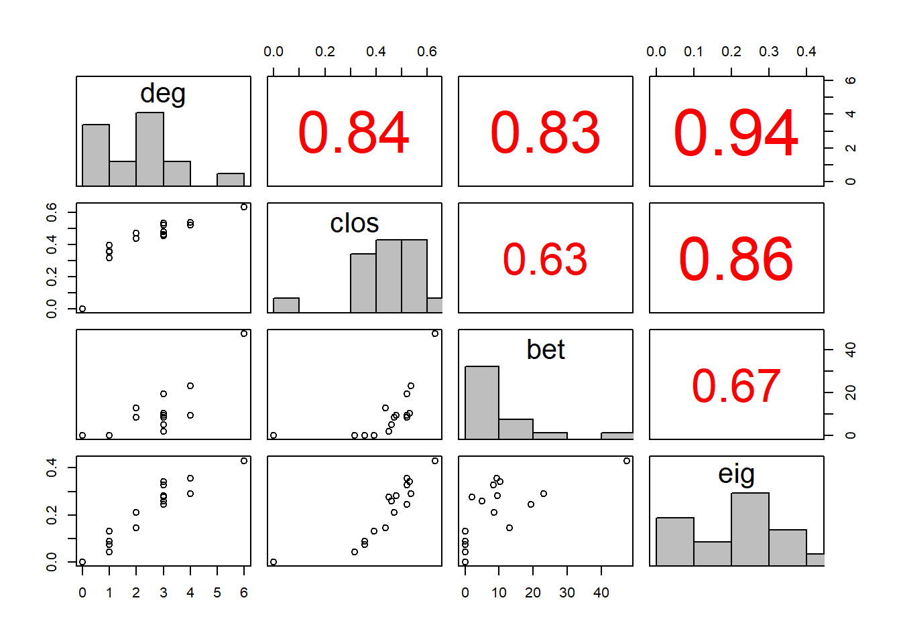
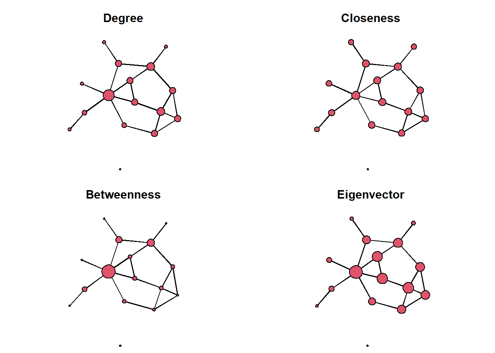

library(statnet)Centrality Measures in R
Centrality Measures
Centrality measures assess the importance of an actor’s position within a network. We will explore the most important ones: degree centrality, closeness centrality, betweenness centrality, and eigenvector centrality. While other centrality measures exist, they are often related to one of these four.
We again start by loading the statnet suite (which contains the network and sna packages):
We will demonstrate the various centrality mesures using the florentine datasets contained in the network package, which contain the marriage and business ties among Renaissance Florentine families. The dataset was originally prepared by Padgett (1994), which is now a classic. Since the data is already prepared as a set of network objects, we can skip conversion this time.
We make the datasets available with a call to data(...):
data(florentine)Before we start measuring centrality, let’s have a brief look at the marriage network. First, we get the names of the families which are stored as a vertex attribute in the flomarriage network object. We can extract a vertex attribute using the %v% pipe:
family_names <- flomarriage %v% "vertex.names"Now lets plot the network, labeling the nodes with the extracted names:
gplot(flomarriage,
gmode = "graph",
label = family_names,
vertex.col = "grey20",
edge.col = "grey70")
Degree Centrality
Degree centrality is just the number of edges connected to a node, which we can compute using the degree(...) function from the sna package. Calling the function on a network returns a vector with the centrality score for each node in the network:
deg = degree(flomarriage, gmode="graph")
deg [1] 1 3 2 3 3 1 4 1 6 1 3 0 3 2 4 3We specify the gmode="graph" argument because the marriage network is undirected.
If we want to compare centralities visually, we can scale the node size in a network using the vertex.cex (cex = character expansion factor) argument:
gplot(flomarriage,
gmode = "graph",
label = family_names,
vertex.cex = sqrt(deg),
vertex.col = "grey20",
edge.col = "grey70")
Instead of using degrees directly, we use the square root of degrees because otherwise some nodes will be too large. Here, we can see that the Medici are the most central family in the network in that they have the most marriage ties to other Florentine families.
In case we are more interested in the general distribution of centrality in the network, we can plot a histogram of degrees:
hist(deg, xlab = "Degree centrality", main = "Degree distribution")
This is often more useful for learning something about the structure of large networks, where the network graph quickly becomes unreadable.
Degree for Directed Networks
In directed graphs, we distinguish between indegree and outdegree, i.e. the number of incoming and outgoing edges, respectively.
To compute these, we first need to specify gmode="digraph" in the degree() function call. We then have the choice between cmode="indegree", cmode="outdegree", and cmode="freeman", where the freeman option is just the sum of in- and outdegrees.
Closeness Centrality
Closeness centrality measures how close an actor is to all other actors in the network, including indirect contacts. It is the inverse of a node’s farness, where farness is the sum of the shortest path distances to all other nodes.
There is a function for calculating closeness centrality which similarly to the degree function requires specifying the network mode via gmode. In a directed network, edge directions can additionally be ignored by specifying cmode="undirected".
However, if we call the closeness(...) function on the marriage network, we get an unexpected result:
closeness(flomarriage, gmode = "graph") [1] 0 0 0 0 0 0 0 0 0 0 0 0 0 0 0 0Because the network contains an isolate node and paths to isolated nodes are specified to have infinite length, our farness is infinite. Accordingly, closeness is 0 for all nodes because \(1/\infty = 0\).
Remove Isolates
One way to tackle the above is to remove isolated nodes from the network, which can be useful more generally. To do so, we first identify all isolated nodes in the network using the isolates(...) function:
isol <- isolates(flomarriage)
isol[1] 12This tells us that the 12th node in the network is isolated. To get all nodes that are not isolated, we create a list of all node indices and remove the isolated ones:
noisol <- seq(network.size(flomarriage))[-isol]
noisol [1] 1 2 3 4 5 6 7 8 9 10 11 13 14 15 16With this list we can now use the %s% operator to generate a subset of the network containing only the nodes that are not isolated:
flomarriage_noisol <- flomarriage %s% noisolCalculating closeness now yields meaningful results.
closeness(flomarriage_noisol, cmode = "undirected") [1] 0.3684211 0.4827586 0.4375000 0.4000000 0.3888889 0.3333333 0.4666667
[8] 0.3255814 0.5600000 0.2857143 0.3684211 0.5000000 0.3888889 0.4375000
[15] 0.4827586Sum-of-Inverse Distances Closeness
Another approach to handle infinite geodesic distances in closeness calculations is using the sum-of-inverse-distances method. this approach reformulates closeness as the sum of inverse distances instead of the inverse of the sum of distances, which means that just the term involving the isolate node will be zero.
We can calculate closeness this way by specifying cmode = "suminvundir":
clos <- closeness(flomarriage,
gmode = "graph",
cmode = "suminvundir")
clos [1] 0.3944444 0.5222222 0.4722222 0.4800000 0.4611111 0.3555556 0.5388889
[8] 0.3577778 0.6333333 0.3177778 0.4522222 0.0000000 0.5333333 0.4388889
[15] 0.5222222 0.5222222We can see that this yields similar results compared to when the isolate node is dropped and just sets the closeness of node 12 to zero.
Betweenness Centrality
Betweenness centrality measures the extent to which a node lies on the shortest paths between all other nodes, effectively controlling network flow where traffic is assumed to always follows the shortest path.
As before, there is a function to compute this, with arguments to control how to treat directed edges:
bet <- betweenness(flomarriage, gmode = "graph")
bet [1] 0.000000 19.333333 8.500000 9.500000 5.000000 0.000000 23.166667
[8] 0.000000 47.500000 0.000000 2.000000 0.000000 10.333333 13.000000
[15] 9.333333 8.333333Normalize by Theoretical Maximum
Because betweenness scores can get very large quickly, it can make sense to normalize them agains the theoretical maximum value. This maximum is achieved by a star graph (just one noded connected to all others) and can be computed just using the network size \(N\):
N <- network.size(flomarriage)
norm <- ((N-1)*(N-2)/2)
bet_norm <- bet / normEigenvector Centrality
Eigenvector centrality builds on the recursive intuition that a node is influential if its neighbours are influential. It is defined as the principal eigenvector of the adjacency matrix.
We can compute it using the evcent(..) function:
eig <- evcent(flomarriage, gmode="graph")
eig [1] 0.13215429 0.24395611 0.21170525 0.28280009 0.25902617 0.07492271
[7] 0.28911560 0.08879189 0.43030809 0.04481344 0.27573037 0.00000000
[13] 0.34155264 0.14591720 0.35598045 0.32584230Eigenvector centralities are only useful for comparisons across nodes as the individual scores don’t have a useful interpretation.
Comparing Centrality Measures
While the above centrality measures build on very different theoretical considerations or intuitions, the are often strongly correlated for many real-world cases.
We can inspect this correlation using a pairs plot:
source("helpers/pairsplot.R") # load helper script to improve the plot
measures <- cbind(deg, clos, bet, eig)
pairs(measures,
upper.panel = panel.cor,
diag.panel = panel.hist)
Indeed, we see that most of the measures are quite strongly correlated.
We can also plot the network multiple times and using the different measures to scale nodes. to make visual comparison easier, we precompute the layout to fix node positions across the plots, using the Fruchterman-Reingold algorithm:
layout <- network.layout.fruchtermanreingold(flomarriage,
layout.par = NULL)To plot multiple plots into the same figure, we specify par(mfrow = c(2,2)) before calling our plotting functions, which creates a \(2 \times 2\) plot grid:
par(mfrow = c(2,2), mar=c(0,0,3,0))
gplot(flomarriage,
coord=layout,
gmode="graph",
vertex.cex=.3 + .3*deg,
main="Degree")
gplot(flomarriage,
coord=layout,
gmode="graph",
vertex.cex=.3 + 2*clos,
main="Closeness")
gplot(flomarriage,
coord=layout,
gmode="graph",
vertex.cex=.3 + 5*bet_norm,
main="Betweenness")
gplot(flomarriage,
coord=layout,
gmode="graph",
vertex.cex=.3 + 5*eig,
main="Eigenvector")
As we can see, the Medici are the most central of the Florentine families according to all four centrality measures.
Graph-Level Centralization
While centrality measures are by default used to distinguish nodes by their network position, we can also use them to compute a graph-level centralization score. Centralization measures the degree of concentration of centrality in the network, i.e. te degree to which the network is focused on a single node.
We can compute centralization for a range of centrality measures with the centralization(...) function, to which we pass the corresponding centrality function:
centralization(flomarriage, degree, mode = "graph") [1] 0.2666667centralization(flomarriage, betweenness, mode = "graph")[1] 0.3834921centralization(flomarriage, evcent, mode = "graph")[1] 0.3416652By default, values are normalized against the theoretical maximum centralization and accordingly a value of 1 would represent maximal centralization (obtained in a star graph) and a value of 0 represents uniform centrality (obtained in a circle graph).
Exercises
- Load the lazega advice network into a directed
networkobject.
Solution
adjmat <- read.table("data/lazega_advice.csv",
sep =";",
header = TRUE,
row.names = 1,
check.names = FALSE)
adjmat <- as.matrix(adjmat)
net_advice <- network(adjmat)- Pick an appropriate centrality measure to capture the flow of knowledge across the network. Which measure do you choose?
Solution
# Betweenness centrality might be a reasonable fit, although it is questionable that knowledge should only flow across shortest paths. A better alternative might be flow betweeness.- Compute the corresponding node level centralities using an appropriate specification.
Solution
bet <- betweenness(net_advice) - Find the most and least central nodes in the network.
Solution
which.min(bet)
which.max(bet) - Visualize the network using the centrality scores.
Solution
dev.off()
gplot(net_advice,
gmode = "graph",
vertex.cex = 1 + 0.1*sqrt(bet),
vertex.col = "grey20",
edge.col = "grey70")- Visualize the distribution of the centrality scores using a histogram. What do you learn about the network?
Solution
hist(bet,
main="Distribution of betweenness scores",
xlab="Betweenness centrality")- Compute the centralization of the network using the chosen centrality measure. What does it tell you?
Solution
centralization(net_advice, betweenness)- Also load the friendship network into your
Rsession.
Solution
adjmat <- read.table("data/lazega_friendship.csv",
sep =";",
header = TRUE,
row.names = 1,
check.names = FALSE)
adjmat <- as.matrix(adjmat)
net_friendship <- network(adjmat)- Compute centralities for the friendship network using the same measure as before.
Solution
bet_friendship <- betweenness(net_friendship)- Plot the two networks side-by-side, using the respective centrality scores to scale node size. What do you observe?
Solution
par(mfrow = c(1,2), mar=c(0,0,3,0))
layout <- network.layout.fruchtermanreingold(net_advice,
layout.par = NULL)
gplot(net_advice,
coord=layout,
gmode="graph",
vertex.col = "grey20",
vertex.cex = 1 + 0.1*sqrt(bet),
edge.col = "grey70",
main="Advice ties")
gplot(net_friendship,
coord=layout,
gmode="graph",
vertex.col = "grey20",
vertex.cex = 1 + 0.1*sqrt(bet_friendship),
edge.col = "grey70",
main="Friendship ties")- Plot a scatter plot of the advice and friendship betweenness scores.
Solution
dev.off()
plot(bet, bet_friendship, xlab="Advice", ylab="Friendship")- Compute the centralization for the friendship network and compare the resulting score to the advice network.
Solution
centralization(net_advice, betweenness)
centralization(net_friendship, betweenness)